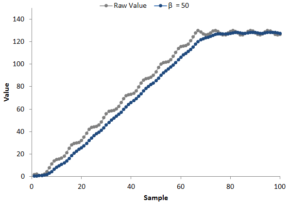

The position filter provides output smoothing to positional sensors such as sliders, wheels, and trackpads. It is a first-order IIR low-pass filter with 255 adjustable steps to control the filter strength. It may be enabled or disabled by toggling the Position_Filter_Enable parameter. The filter characteristics are the same as the count filter and LTA filter, but the position filter allows for a greater level of adjustment- 255 different filter strengths, rather than the 7 allowed by the basic count and LTA filter. The position filter is best applied to sensors with resolutions higher than 16 points. Below 16 points, filtering is generally not required for stable selection of a position.
The equation below defines the output of the filter. The previous filtered position value is combined with each new raw position according to this equation.
If the position filter is enabled, its strength is controlled by the Position_Filter_Beta parameter. As the beta value is decreased, the attenuation of AC signals increases, but at the expense of DC response time. The two examples below illustrate this concept. The position output of a 7-bit slider is shown, with the raw waveform displaying the samples captured while a user moved their finger from position 0 to position 128. The filtered signal is superimposed over the raw value to show the effect of the filter. Notice how the filter has the effect of "smoothing" the position output.
The second example below shows the use of a stronger filter than the previous example. In this example, almost all of the jitter from the raw measurement was removed in the filtering process. However, a small lag time was introduced. A small lag is typically far less noticeable to a user than jitter, so applying the stronger filter provides better perceived performance.

Implementation Notes
A good starting point for implementing a position filter is a beta of 150. Note that decreasing the beta
will increase the response time of the system. It is also important to note that the filter strength is also
dependent upon the system scan rate. For example, a filter beta of 100 at 25 Hz has similar smoothing characteristics
as a filter beta of 50 at 50 Hz. However, measuring the sensor at a higher report rate and strengthening the filter
(by decreasing the beta) often provides better performance, as there is an oversampling effect.
Note that the filtered value is reseeded immediately when a new touch is detected.
Range of Valid Values for the Count Filter Beta Parameter
The position filter beta may be set from 0 to 255, with 255 being equivalent to off.
Affected Software Parameters
The Position_Filter_Enable parameter corresponds to the bSliderFilterEnable member of the
tSliderSensorParams
and
tWheelSensorParams types in the CapTIvate Touch Library.
The Position_Filter_Beta parameter corresponds to the ui8SliderBeta member of the
tSliderSensorParams
and
tWheelSensorParams types in the CapTIvate Touch Library.